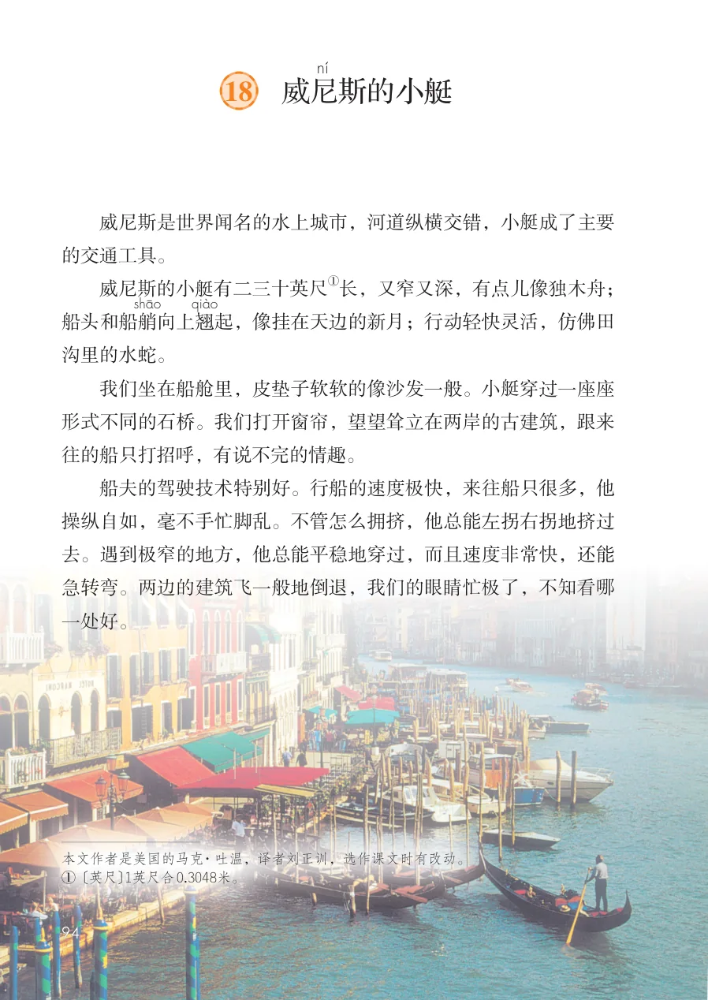
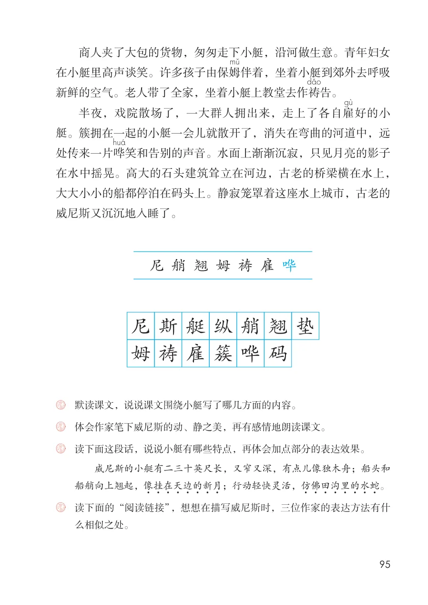
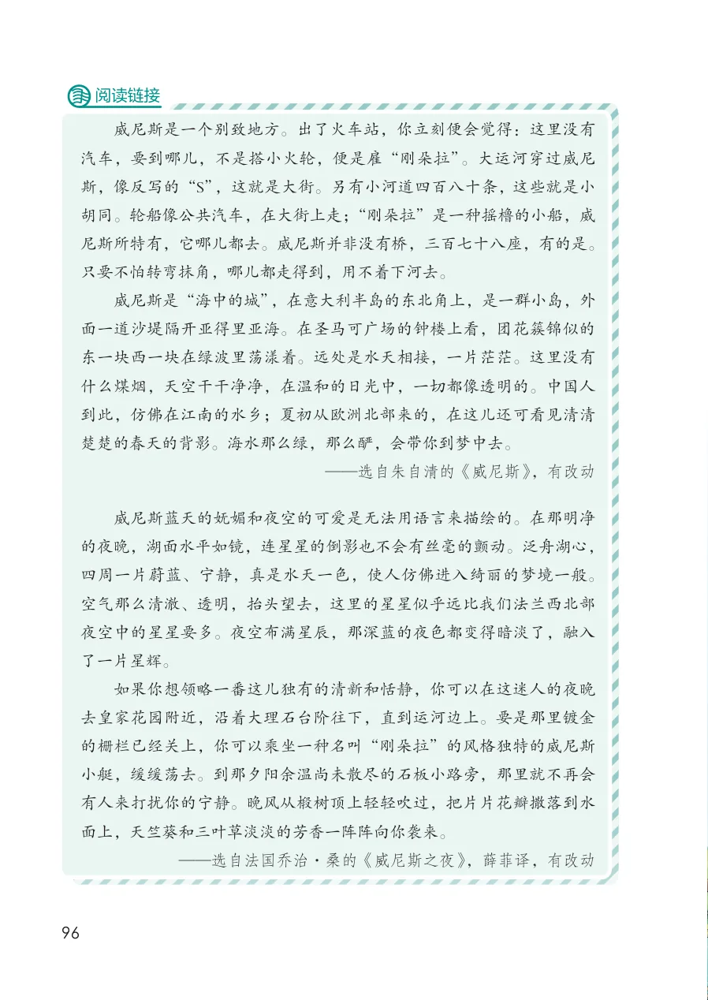

展开章节菜单
18 威尼
斯的小艇
威尼斯是世界闻名的水上城市，河道纵横交错，小艇成了主要的交通工具。
威尼斯的小艇有二三十英尺船头和船艄
向上翘
起，像挂在天边的新月；行动轻快灵活，仿佛田沟里的水蛇。
我们坐在船舱里，皮垫子软软的像沙发一般。小艇穿过一座座形式不同的石桥。我们打开窗帘，望望耸立在两岸的古建筑，跟来往的船只打招呼，有说不完的情趣。
船夫的驾驶技术特别好。行船的速度极快，来往船只很多，他操纵自如，毫不手忙脚乱。不管怎么拥挤，他总能左拐右拐地挤过去。遇到极窄的地方，他总能平稳地穿过，而且速度非常快，还能急转弯。两边的建筑飞一般地倒退，我们的眼睛忙极了，不知看哪一处好。
① 〔英尺〕1英尺合0.3048米。
查看教材原页（保留全部图片、注音与原始排版）

商人夹了大包的货物，匆匆走下小艇，沿河做生意。青年妇女
在小艇里高声谈笑。许多孩子由保姆
伴着，坐着小艇到郊外去呼吸
新鲜的空气。老人带了全家，坐着小艇上教堂去作祷
告。
半夜，戏院散场了，一大群人拥出来，走上了各自雇
好的小
艇。簇拥在一起的小艇一会儿就散开了，消失在弯曲的河道中，远
处传来一片哗
笑和告别的声音。水面上渐渐沉寂，只见月亮的影子
在水中摇晃。高大的石头建筑耸立在河边，古老的桥梁横在水上，
大大小小的船都停泊在码头上。静寂笼罩着这座水上城市，古老的
威尼斯又沉沉地入睡了。
威尼斯的小艇有二三十英尺长，又窄又深，有点儿像独木舟；船头和
船艄向上翘起，像挂在天边的新月
3 ；行动轻快灵活，仿佛田沟里的水蛇
3 。
么相似之处。
查看教材原页（保留全部图片、注音与原始排版）

威尼斯是一个别致地方。出了火车站，你立刻便会觉得：这里没有汽车，要到哪儿，不是搭小火轮，便是雇“刚朵拉”。大运河穿过威尼斯，像反写的“S”，这就是大街。另有小河道四百八十条， 这些就是小胡同。轮船像公共汽车，在大街上走；“刚朵拉”是一种摇橹的小船，威尼斯所特有，它哪儿都去。威尼斯并非没有桥，三百七十八座，有的是。只要不怕转弯抹角，哪儿都走得到，用不着下河去。
威尼斯是“海中的城”，在意大利半岛的东北角上，是一群小岛，外面一道沙堤隔开亚得里亚海。在圣马可广场的钟楼上看，团花簇锦似的东一块西一块在绿波里荡漾着。远处是水天相接，一片茫茫。这里没有什么煤烟，天空干干净净，在温和的日光中，一切都像透明的。中国人到此，仿佛在江南的水乡；夏初从欧洲北部来的，在这儿还可看见清清楚楚的春天的背影。海水那么绿，那么酽，会带你到梦中去。
威尼斯蓝天的妩媚和夜空的可爱是无法用语言来描绘的。在那明净的夜晚，湖面水平如镜，连星星的倒影也不会有丝毫的颤动。泛舟湖心，四周一片蔚蓝、宁静，真是水天一色，使人仿佛进入绮丽的梦境一般。空气那么清澈、透明，抬头望去，这里的星星似乎远比我们法兰西北部夜空中的星星要多。夜空布满星辰，那深蓝的夜色都变得暗淡了，融入了一片星辉。
如果你想领略一番这儿独有的清新和恬静，你可以在这迷人的夜晚去皇家花园附近，沿着大理石台阶往下，直到运河边上。要是那里镀金的栅栏已经关上，你可以乘坐一种名叫“刚朵拉”的风格独特的威尼斯小艇，缓缓荡去。到那夕阳余温尚未散尽的石板小路旁，那里就不再会有人来打扰你的宁静。晚风从椴树顶上轻轻吹过，把片片花瓣撒落到水面上，天竺葵和三叶草淡淡的芳香一阵阵向你袭来。
查看教材原页（保留全部图片、注音与原始排版）
